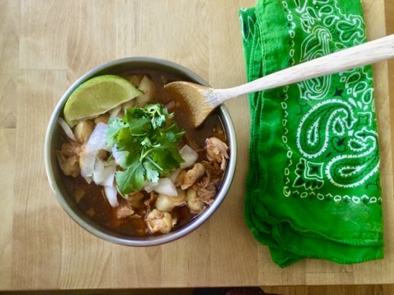
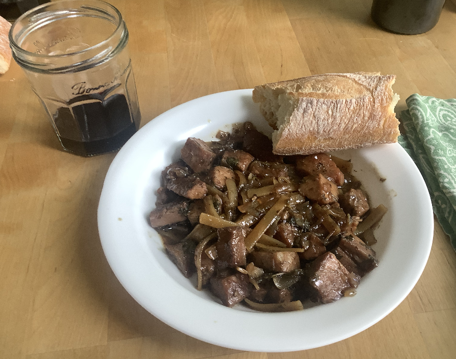
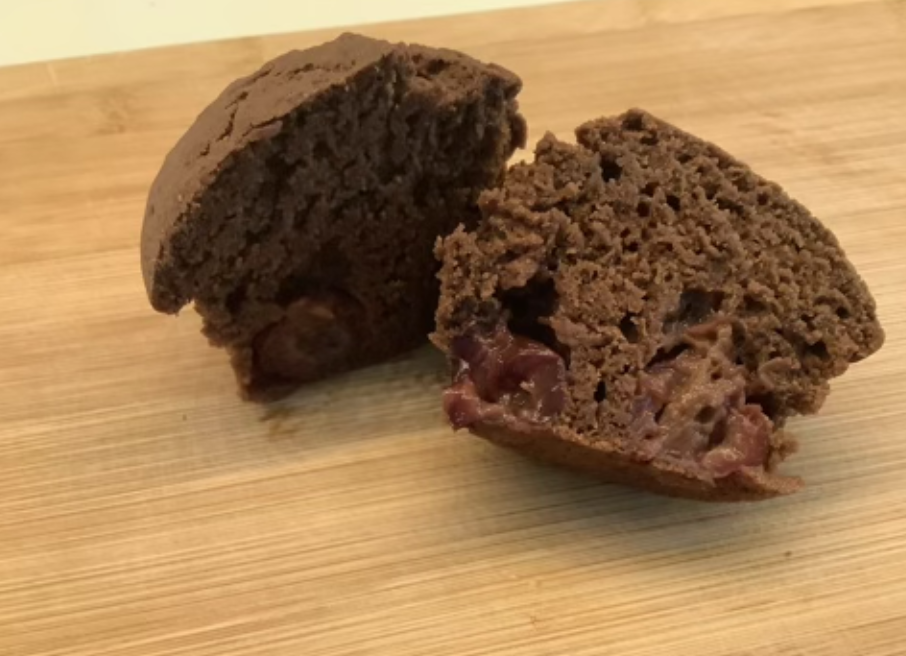
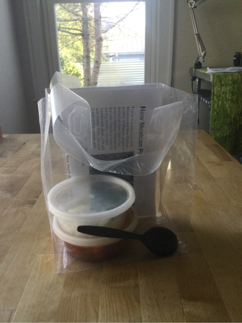

March 19, 2021
A dosa is like a flat, crispy pancake, originating from Southern India. A dosa can be eaten with a potato dish called Aloo Masala. A dosa is made by soaking rice, black gram (a type of bean), and fenugreek seeds in water and blending them until you get a smooth batter, and then frying it like a pancake. A dosa is supposed to be thin. Aloo Masala is made by boiling potatoes in water and mashing them with black gram, spices, cashews, and ginger.
Aloo Masala Filling Recipe
Dosa Recipe
"If I got it at a food truck, I would order it again and eat the whole thing." 9 1/2 out of 10
"Very good flavor - something new for me and I enjoyed it." 9 out of 10
April 3, 2021
Posole is a stew from both Mexican and New Mexican cuisine. In Mexico, posole is served on New Year’s Eve, and on holidays throughout the year. Posole is made by boiling hominy, dry corn treated with alkali, until soft and chewy. Then, you cook it with chiles, spices, and meat (usually pork). It is served with chopped onion soaked in ice water, lime, and cilantro.
Note: This dish was a little bland and quite meaty. I would suggest cutting the meat back by half and browning it a little bit before putting it in the pot.
"I enjoyed this, but agree that it could have used a little more salt. Thank you for sharing it with me! I feel like I'm traveling without leaving the state!" 8 out of 10
"I thought the soup was delicious! I added a little bit of salt and pepper, along with the provided toppings. I loved the amout of 'spicy' flavor it had. I'm excited for the next round!" 8 out of 10
October 4, 2021
This dish was originally in a cookbook written in 900 AD, and cooked by the ancient Romans. It is a stew of pork in a type of sweet sauce with little bits of tracta, or thin flour crackers. I couldn’t find thin crackers to make this dish, so I used thin noodles instead.
Minutal of Apricots Recipe, 21 minutes in
"I really enjoyed this stew. It was one of my favorites! I'll try to make it this winter in my crock pot. Thanks!" 9 1/2 out of 10
May 15 - 18, 2021
My statement for this dish is that I like to try new things, even though they might not work out the way I expect them to.
"It was just the right amount of spice - enough to feel it but not overwhelm it! Thanks again for thinking of me!" 10 out of 10
"This was better than I was expecting! It was a smidge on the dry side but the little hint of spicy was unexpectedly delicious! Loved it." 9 out of 10
2021
I took little portions of each thing I made to two of my neighbors, wrote up a pamphlet for each dish, and asked them for a review.